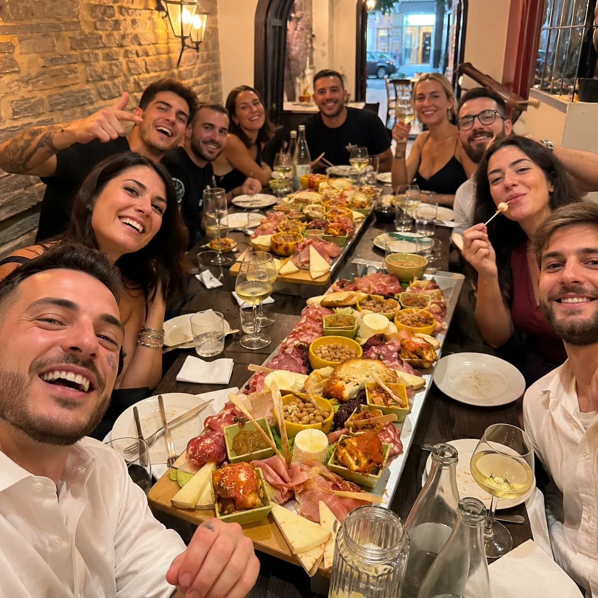
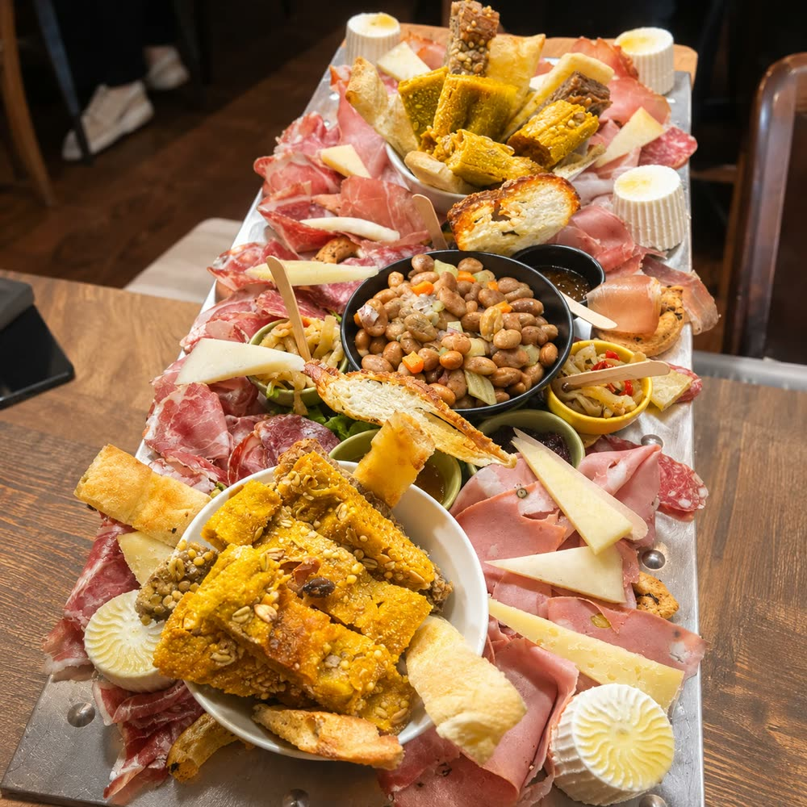

Vuoi provare i veri piatti romani ma non sai cosa scegliere?
30 piatti della vera cucina romana
a 25€
Fino a fine anno
Minimo 2 persone · Solo su prenotazione
Via Taranto 8/10/12 · San Giovanni, RomaScegli giorno, orario e quante persone (minimo 2): in un minuto il tavolo è riservato a tuo nome.
Per i veri amanti della cucina romanaCarbonara, cacio e pepe, amatriciana e gricia: la cucina romana come si fa a casa, senza scorciatoie.
Guanciale, pecorino romano e ingredienti scelti con cura, per sapori veri in ogni piatto.
Un locale caldo e accogliente a San Giovanni, con una carta di vini, bollicine e champagne per accompagnare ogni piatto.
A due passi da San Giovanni, una cucina che parla romano: i primi della tradizione, una cantina curata e il tempo giusto per goderseli.
Da Romano Vino e Cucina trovi i piatti che hanno fatto la storia della cucina di Roma, accompagnati da una selezione di vini, bollicine e champagne, taglieri di salumi e formaggi.
A pranzo, a cena o per un aperitivo: da Romano trovi sempre Roma a tavola.
